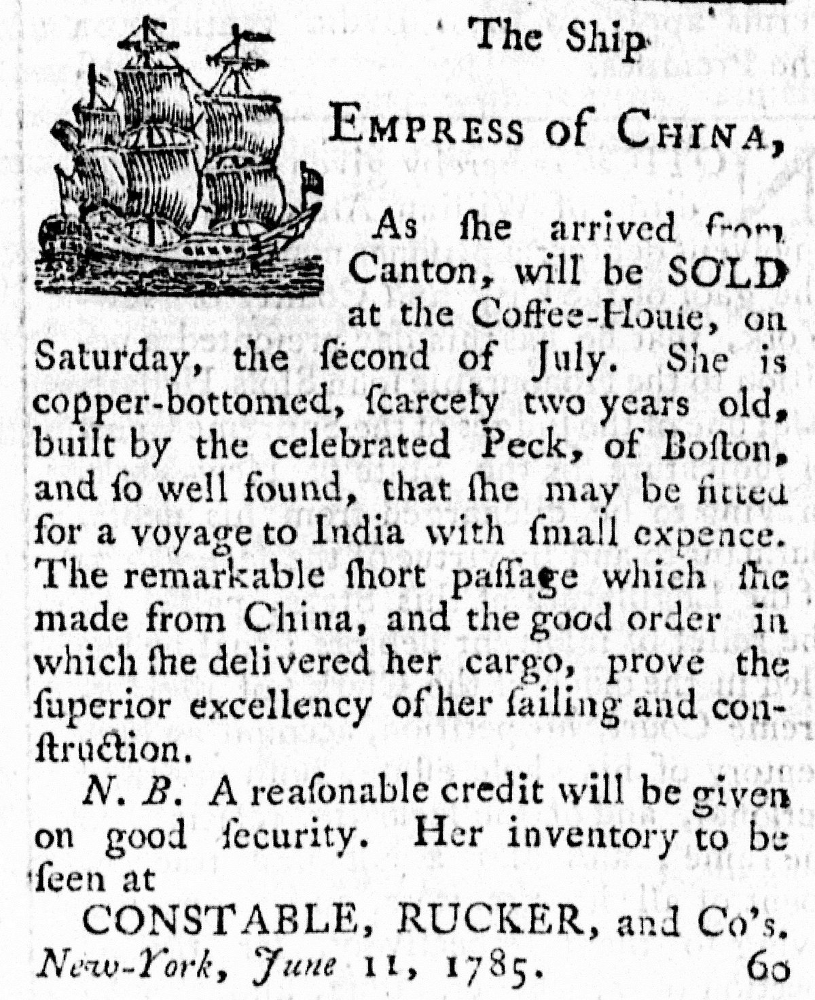
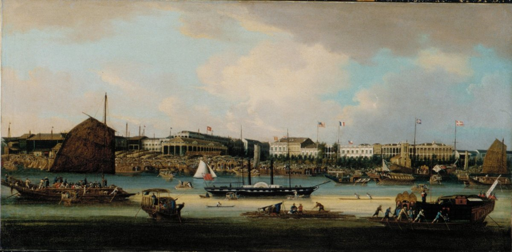
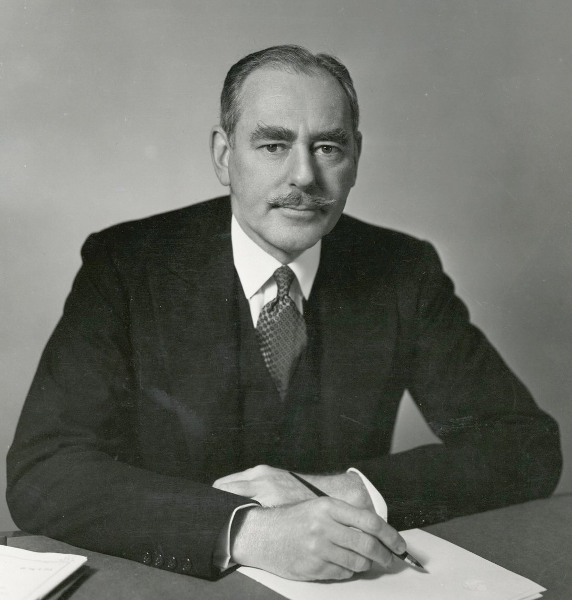
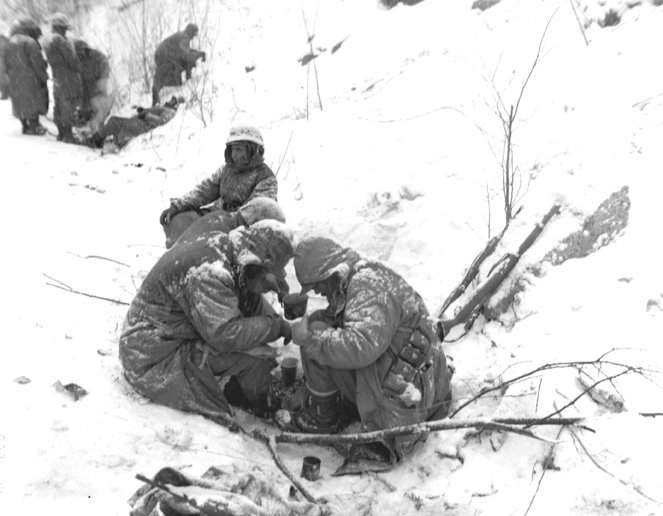

[동북아이야기①] 중·미 240년, 광저우에서 시작된 기회와 배신의 역사
인삼을 실은 중국황후호, 광저우의 중국인들은 미국인을 '새 사람들'이라 불렀다
배척법과 산둥과 얄타, 미국은 중국에 손을 내밀고 또 등을 돌렸다
책임을 장제스 정권에 돌린 백서는 매카시즘의 불쏘시개 가운데 하나가 됐다
미국과 새 중국의 관계는 시작하자마자 한반도에서 피로 막혔다
AI경제저널=김갑봉 기자 | 1784년 2월 22일, 미국 상선 중국황후호(Empress of China)가 뉴욕항을 떠났다. 조지 워싱턴의 쉰두 번째 생일이었다. 독립전쟁을 매듭지은 파리조약에 서명한 지 다섯 달 남짓 지난 때였다. 영국 시장을 잃은 신생국에는 새 시장이 절실했다.
독립전쟁 재정을 맡았던 로버트 모리스가 앞장서 돈을 댔다. 360톤급 범선에 북미산 인삼 30톤가량과 모피, 직물을 실었다. 선장 존 그린이 이끄는 배는 대서양을 건너 희망봉을 돌고 인도양을 지났다. 8월 23일 성조기가 처음으로 중국 바다에 나부꼈다. 28일 배는 광저우(廣州) 하류 황푸(黃埔)에 닻을 내렸고, 30일 일행이 광저우에 들어갔다.
인삼과 '새 사람들'
배에서 거래를 도맡은 화물관리인은 스물아홉 살 새뮤얼 쇼였다. 독립전쟁 내내 포병 장교로 싸웠고 헨리 녹스 장군의 부관을 지냈다. 쇼의 일기를 보면 중국인들은 한동안 미국인과 영국인을 가려내지 못했고, 미국인을 '새 사람들(New People)'이라 불렀다. 지도를 펴 미국 땅의 넓이와 늘어나는 인구를 보여 주자 그들은 제국의 물건을 팔 큰 시장이 생겼다며 반겼다.
중국황후호는 넉 달 넘게 머물며 인삼과 모피를 팔았다. 1784년 12월 27일 광저우를 떠나 이듬해 5월 11일 뉴욕에 돌아왔다. 짐칸에는 차 800상자와 난징 무명 바지 2만 벌이 실려 있었다. 수익률 25%는 기대에 못 미쳤지만 미중 무역의 길을 트기엔 넉넉했다.

쇼는 1786년 1월 연합회의(독립 직후 미국의 중앙 의회)에서 초대 광저우 주재 미국 영사로 뽑혔다. 그는 1790년 1월 워싱턴 대통령에게 보낸 편지에 그 자리에는 봉급도 수당도 붙지 않았다고 적었다. 나라가 이름만 주고 보수는 주지 않는 자리였다. 쇼는 그 뒤로도 두 차례 더 중국을 오갔고, 1794년 귀국하던 배 위에서 병으로 숨졌다.
미국이 중국에 처음 보낸 영사가 상인이었다는 사실은 이 관계의 출발점을 말해 준다. 두 나라는 장사로 만났다. 광저우가 반긴 것도 새 나라가 아니라 새 시장이었다. 그러나 미국의 장사는 인삼에서 멈추지 않았다.
남이 부순 문으로 들어간 나라
1840년 아편전쟁이 터졌다. 미국 상인들도 아편과 무관하지 않았다. 광저우의 최대 미국 상사였던 러셀상회는 영국과 미국을 통틀어 세 번째로 큰 아편 거래 회사였다. 이 상사를 이끈 워런 델러노가 훗날 프랭클린 루스벨트 대통령의 외할아버지다. 미국은 전쟁에는 끼지 않았지만 영국이 얻은 이권은 똑같이 요구했다.
1844년 7월 3일 마카오 교외 왕샤(望廈)촌에서 미중 첫 조약인 망하조약이 맺어졌다. 미국 특사 케일럽 커싱과 청의 흠차대신(황제가 보낸 전권 대신) 기영(耆英)이 마주 앉았다. 미국은 최혜국 대우(다른 나라에 준 혜택을 똑같이 받는 권리)를 얻었고, 미국인이 중국 땅에서 죄를 지어도 미국 법으로 재판받는 치외법권을 조약에 새겼다. 이 조약 뒤로 열강이 맺은 조약마다 치외법권이 넓어졌다.

영국이 함포로 연 문을 미국은 뒤따라 들어가 같은 몫을 챙겼다. 예순 해 전 '새 사람들'로 불리던 나라가 이제 남이 부순 문으로 들어서고 있었다. 새 사람들도 낡은 열강의 방식을 배웠다. 함포가 동아시아의 문을 연 그 시대 이야기는 이 연재 2편에서 자세히 다룬다.
1899년 국무장관 존 헤이가 문호개방을 내걸었다. 열강이 저마다 차지한 세력권 안에서도 모든 나라에 같은 장사 기회를 주자는 제안이었다. 이듬해에는 중국의 영토 보전을 원칙으로 덧붙였다. 겉으로는 중국을 지키는 듯했으나, 뒤늦게 뛰어든 미국이 제 몫을 지키려는 계산이었다.
1900년 의화단 봉기 때 미국은 8개국 연합군에 끼었다. 이듬해 신축조약으로 청은 열강에 막대한 배상금을 물게 됐다. 1907~1908년 미국은 받을 배상금 가운데 일부를 돌려주기로 했다. 미국의 선의만은 아니었다. 주미 청국 공사 양성(梁誠)이 이자 셈법 탓에 1000만달러 넘게 더 걷힌다고 짚으며 두 해 동안 협상한 결과였다.
청은 그 돈으로 1909년 유미학무처를 세워 미국 유학생을 뽑았고, 1911년 칭화학당을 열었다. 이 학교가 1928년 국립 칭화대학이 됐다. 돌려받은 배상금으로 미국 유학생을 길러 낼 학교가 선 것이다. 미국은 무력 대신 교육으로 영향력을 심었다.
배척과 밀약
같은 시기 미국 안에서는 중국인을 밀어냈다. 1882년 미국 의회는 중국인배척법을 만들어 중국인 노동자의 이민을 10년 동안 막았고, 이 법은 거듭 연장됐다. 1905년 중국 상인들은 그 모욕에 맞서 미국 상품 불매운동을 벌였다. 같은 1882년 5월 22일 제물포에서 조선과 미국이 조미수호통상조약을 맺었는데, 그 다리를 놓은 사람이 청의 이홍장(李鴻章)이었다. 이홍장은 러시아와 일본을 막으려 조선의 문을 미국에 열게 했고, 조선이 청의 속방이라는 주장은 따로 조회문에 담게 했다.
1919년 파리강화회의는 독일이 갖고 있던 산둥(山東)의 권익을 중국이 아닌 일본에 넘겼다. 윌슨 대통령의 민족자결 구호에 기대를 걸었던 베이징 학생들은 5월 4일 톈안먼 앞에 모였다. 5·4운동이다. 윌슨에게 실망한 지식인 가운데 일부는 마르크스주의로 돌아섰고, 1921년 중국공산당이 태어났다.
1943년 1월 11일 미국은 중화민국과 새 조약을 맺어 백 년 가까이 누려 온 치외법권을 내려놓았다. 그해 12월에는 전시 동맹국의 사기를 북돋우려 중국인배척법도 없앴다. 같은 해 11월 카이로에서 루스벨트와 처칠과 장제스(蔣介石)는 '적당한 시기에' 조선을 자유롭고 독립된 나라로 만들기로 했다. 그러나 1945년 2월 얄타에서 루스벨트는 만주 철도의 공동 운영권과 뤼순항 조차권을 소련에 넘기는 밀약에 서명했다. 장제스의 동의는 나중에 받아 내기로 했다.
중국 쪽에서 보면 미국은 손을 내밀다가도 등을 돌렸다. 배척법과 산둥과 얄타가 그랬다. 배신이라는 말은 이 관계에서 늘 양쪽에서 나왔다. 그 말이 미국에서 크게 터져 나온 것이 1949년이었다.
국공내전과 미국의 오판
1936년 12월 12일 시안(西安)에서 장쉐량(張學良)이 장제스를 가뒀다. 공산당 토벌을 멈추고 함께 일본과 싸우자는 요구였다. 이듬해 일본이 전면 침략에 나서자 2차 국공합작이 이뤄졌다. 태평양전쟁이 터지자 미국과 중화민국은 동맹이 됐다.
루스벨트는 중화민국을 전후 질서를 떠받칠 '네 경찰'(미국·영국·소련·중국)의 하나로 꼽았다. 중화민국은 유엔 안전보장이사회 상임이사국이 됐다. 다만 미국이 손잡은 것은 장제스의 국민당 정부였다. 워싱턴은 그 정부가 빠르게 신뢰를 잃고 있다는 현지 외교관들의 보고를 받으면서도 장제스를 놓지 않았다.
일본이 항복하자 내전이 다시 불붙었다. 1945년 12월 20일 조지 마셜이 특사로 중국에 왔다. 국민당과 공산당을 한 정부로 묶으려 했지만 휴전은 번번이 깨졌다. 1946년 국민당이 무리한 공세에 나서자 마셜은 경고했다. 국민당군은 도시는 빼앗아도 공산군은 없애지 못하고, 결국 후퇴하거나 미국이 준 무기와 함께 군대째 항복하게 되리라는 것이었다. 1947년 1월 마셜은 빈손으로 중국을 떠났다.
애치슨 국무장관은 1949년 7월 30일 트루먼 대통령에게 올린 서한에서 이 경고를 되짚으며 이보다 더 들어맞은 판단은 없었다고 썼다. 국민당 군대는 적이 꺾을 것도 없이 스스로 무너졌다고 했다. 현지 미군 관찰관들의 보고를 들어, 결정적인 해였던 1948년에 무기나 탄약이 모자라 진 싸움은 한 번도 없었다고도 했다. 1947년 6월 유럽 부흥 계획을 내놓은 마셜도 중국에서는 아무것도 되살리지 못했다.
"누가 중국을 잃었나"
그 서한을 앞세운 중국백서가 1949년 8월 5일 정오에 나왔다. 정식 이름은 『미국의 대중국 관계: 1944~1949년을 중심으로』, 국무부 간행물 3573호다. 백서는 부속문서까지 1054쪽에 이르렀다. 극동국장 월턴 버터워스가 중국통 관리들을 이끌고 만들었다. 결론은 미국이 할 수 있는 일은 다 했고 중국의 몰락은 미국 정책 탓이 아니라는 것이었다.
백서는 실패의 고백이라기보다 책임을 국민당 정권에 돌리는 변론에 가까웠다. 공화당의 공세를 막으려고 낸 문서였다. 당시 『타임』은 이를 '변호사의 변론서'라고 불렀다. 그래도 정부가 외교 기록을 이만큼 쏟아 낸 것은 드문 일이었다.
원조 액수를 두고도 진영마다 셈이 갈렸다. 국무부는 일본 항복 뒤 무상원조와 차관을 20억달러 남짓, 그 절반쯤을 군사원조로 집계했다. 장제스를 감싸던 상원의원들과 주미 중국대사관은 1억1000만달러에 그쳤다고 했고, 마오쩌둥(毛澤東)은 59억달러라고 주장했다. 셈한 기간과 항목이 저마다 달랐다. 한쪽은 너무 적게 줘서 졌다고, 다른 쪽은 침략 자금을 쏟아부었다고 말했다. 숫자는 사실이 아니라 진영의 무기가 됐다.

마오쩌둥은 백서를 그냥 넘기지 않았다. 신화사가 8월 12일부터 잇달아 논평을 내 백서와 애치슨 서한을 공격했다. 마오는 8월 28일 논평 「왜 백서를 논해야 하는가」에서 백서가 솔직하면서도 솔직하지 않다고 꼬집었다. 자기 진영에 이로울 때만 솔직한 척한다는 것이었다. 미국이 내놓은 변론서를 이긴 쪽은 인민을 가르치는 교재로 썼다.
1949년 10월 1일 마오쩌둥이 톈안먼 성루에 올라 중화인민공화국 수립을 선포했다. 마오는 이미 그해 여름 소련 쪽으로 '한쪽으로 기울겠다(一邊倒)'고 밝힌 터였다. 장제스는 12월 10일 청두(成都)를 떠나 타이완으로 건너갔다. 이듬해 2월 14일 중국과 소련은 우호동맹조약을 맺었다. 미국 정계는 "누가 중국을 잃었나(Who lost China)"라는 물음으로 들끓었다.
잃을 수 있는 것은 가진 것뿐인데, 미국은 중국을 가진 적이 없었다. 그런데도 '잃었다'는 말 뒤에는 누군가 나라를 배신했다는 의심이 깔려 있었다. 몇 달 전 소련이 원자탄을 터뜨렸고, 국무부 출신 앨저 히스가 소련 간첩이었다는 의혹이 이미 퍼져 있었다. 백서는 그 의심을 키운 불쏘시개 가운데 하나였다.
1950년 2월 9일 웨스트버지니아 휠링에서 조지프 매카시 상원의원이 국무부 안에 공산주의자가 있다고 주장했다. 배신자를 국무부 안에서 찾은 것이다. 그가 내건 숫자와 명단은 끝내 입증되지 못했지만 그사이 많은 사람의 삶과 경력이 무너졌다. 존 카터 빈센트, 존 서비스, 존 데이비스 같은 중국 전문가들이 국무부에서 밀려났다. 국민당에 대한 불편한 진실을 보고했다는 이유로 공산주의자라는 낙인이 찍혔다.
광저우에서 한반도까지
중국 상실의 충격은 곧 한반도로 옮겨붙었다. 1950년 1월 초 트루먼은 타이완의 국민당군에 군사 원조도 조언도 하지 않겠다고 밝혔다. 1월 12일 애치슨은 워싱턴 내셔널프레스클럽에서 미국의 태평양 방위선을 그었다. 알류샨열도에서 일본과 류큐를 거쳐 필리핀에 이르는 선이었고, 한국과 타이완은 그 밖에 있었다. 이 연설이 스탈린과 김일성의 판단에 얼마나 작용했는지는 지금도 논쟁거리다.
전쟁을 앞에서 끈 것은 김일성이었다. 그는 스탈린의 동의를 얻은 뒤 1950년 5월 13일 비밀리에 베이징을 찾았다. 마오가 스탈린에게 직접 뜻을 묻자, 스탈린은 이튿날 최종 결정은 중국과 북한이 함께 내리라고 답했다. 6월 25일 전쟁이 터지자 미국은 곧바로 개입했다. 6월 27일 트루먼은 제7함대를 타이완해협에 보내 타이완 문제를 그 자리에 얼려 버렸다.
애치슨을 정면으로 다룬 국내 연구도 이 대목을 짚는다. 프레스클럽 연설은 한국을 방어선에서 빼는 듯한 현명하지 못한 언급이었다는 것이다. 그러나 그 연구가 꼽은 애치슨의 가장 큰 실책은 따로 있다. 유엔군이 38선을 넘으면 개입하겠다는 중국의 거듭된 경고를 엄포로 오판한 것이다. 선을 잘못 그은 것보다 상대의 말을 흘려들은 값이 더 컸다.
10월 펑더화이(彭德懷)가 이끄는 중국인민지원군이 압록강을 건넜다. 중국은 이 전쟁을 항미원조전쟁이라 부른다. 11월 말 장진호에서 미 해병 1사단이 포위됐다. 크리스마스 전에 전쟁을 끝내겠다던 맥아더의 장담은 물거품이 됐다. 이 전쟁의 기원과 사료를 둘러싼 다툼은 이 연재 26편과 84편에서 따로 다룬다.

가장 큰 값은 이 땅의 사람들이 치렀다. 국방부 집계를 전한 보도를 보면 국군 전사자는 13만여 명이고, 남한 민간인 피해는 사망·학살·부상·행방불명을 합쳐 99만여 명이다. 북한 지역 민간인 사상자도 150만여 명으로 기록돼 있다. 미국 보훈부 집계로 미군 전사자는 3만3739명, 전장의 다른 사망을 더하면 3만6574명이다. 중국에서는 2020년 시진핑 국가주석이 19만7000명이 넘는 중국인이 목숨을 잃었다고 밝혔는데, 한국과 유엔군 쪽 추산은 이보다 훨씬 크다.
미국과 새 중국의 관계는 시작하자마자 한반도에서 피로 막혔다. 광저우에서 인삼을 팔던 때로부터 170년이 채 안 된 때였다. 서로를 적으로 못박은 두 나라는 스무 해 넘게 등을 돌렸고, 미국은 타이완의 중화민국을 놓지 않았다.
전쟁은 미국도 바꿨다. 국내 연구는 한국전쟁이 미국 세계전략을 군사화하는 데 국가적 합의를 만들어 준 계기였다고 본다. 자유주의와 고립주의 전통 탓에 미뤄 두던 군사화가 전쟁을 거치며 국가의 기본 전략이 됐다. 애치슨이 앞장서 채택한 국가안보회의 문서 68호(NSC 68), 곧 힘으로 소련을 막자는 지침이 그 상징이다. 장사로 시작한 나라가 한반도를 거치며 군사력으로 세계 질서를 떠받치는 나라가 됐다.
다시, 240년의 계산서
2026년 5월 14~15일 도널드 트럼프 미국 대통령이 국빈으로 베이징을 찾아 시진핑 주석과 회담했다. 9월 24일에는 시진핑이 백악관을 국빈 방문했다. 양국은 지난해 부산에서 맺은 관세 휴전이 11월 10일 끝나게 되자 2027년 1월 10일까지 두 달 늘렸다. 두 정상은 무역과 함께 타이완, 이란을 비롯한 중동, 우크라이나, 한반도 문제를 논의했지만 한반도에 관한 구체적인 내용은 공개되지 않았다. 다음 무대는 11월 18~19일 중국 선전(深圳)의 아시아태평양경제협력체(APEC) 정상회의다(2026년 11월 1일 기준).
냉전 뒤 미국 중심의 단극 질서를 중국의 빠른 성장이 흔들며 두 나라의 경쟁을 불렀다는 진단은 이제 상식이 됐다. 그러나 240년을 놓고 보면 적대는 한 구간일 뿐이다. 인삼을 실은 배가 왔고, 아편이 뒤따랐고, 돌려받은 배상금으로 학교가 섰다. 유학생과 상인과 이민자가 오갔고, 그 사이에 배척과 밀약과 전쟁이 끼어들었다. 이해가 맞으면 손을 잡고 어긋나면 등을 돌리는 일이 되풀이됐다. 관세를 사이에 둔 휴전과 협상도 그 연장선에 있다.
이 240년에서 한반도가 선 자리도 분명하다. 1882년 조선의 문은 청의 주선으로 미국에 열렸다. 두 나라의 이해가 가장 크게 어긋났을 때 그 값은 이 땅에서 치러졌다. 애치슨의 방위선 밖에 한국이 있었고, 압록강을 건넌 군대가 밟은 곳도 여기였다. 스무 해 남짓 뒤 두 나라가 다시 악수할 때(이 연재 52편) 그 자리에 한국인은 없었다. 두 나라의 계산 안에 우리 자리를 스스로 만들지 못하면 판은 또 우리를 빼놓고 짜일 것이다.
※ 『동북아이야기』는 조선·한국과 중국, 일본, 러시아, 미국이 얽혀 온 동북아 200여 년을 인물과 사건으로 읽는 84편 기획연재입니다. 매주 일요일 이어지며 단행본 출간을 준비하고 있습니다.
참고문헌
- Lyman P. Van Slyke ed.(1967), The China White Paper, August 1949, Stanford University Press. 미국 국무부 간행물 3573호 『United States Relations with China, with Special Reference to the Period 1944-1949』(1949.08.05)의 재간행본. 애치슨 전달서한(1949.07.30)과 편자 머리말(원조 추정액, 『타임』 평, 매카시와 중국통 관리들)을 실었다. https://archive.org/details/VanSlykeLymanTheChinaWhitePaper1949
- 毛澤東, "Why It Is Necessary to Discuss the White Paper"(왜 백서를 논해야 하는가), 1949.08.28., 『毛澤東選集』 제4권 영문판. https://www.marxists.org/reference/archive/mao/selected-works/volume-4/mswv4_68.htm
- Josiah Quincy ed.(1847), The Journals of Major Samuel Shaw, the First American Consul at Canton, Boston: Wm. Crosby and H. P. Nichols. https://archive.org/details/journalsofmajors00shawiala
- Samuel Shaw to George Washington, 2 January 1790, Founders Online(미국 국립문서기록관리청). https://founders.archives.gov/documents/Washington/05-04-02-0345
- "Ciphered Telegram No. 8600, Vyshinsky to Mao Zedong", 1950.05.14., 윌슨센터 디지털 아카이브. https://digitalarchive.wilsoncenter.org/document/115976
- "Statement by the President, Truman on Korea", 1950.06.27., 메릴랜드대 디지털 아카이브. https://digitalarchive.umd.edu/document/statement-president-truman-korea
- "Yalta Agreement", 1945.02.11., 일본 국립국회도서관. https://www.ndl.go.jp/constitution/e/etc/c04.html
- "The Cairo Declaration", 1943.11.27., 「세계와 일본」 데이터베이스(도쿄대). https://worldjpn.net/documents/texts/docs/19431127.D1E.html
- Franklin D. Roosevelt, "Transmittal to Congress of a Treaty for the Relinquishment of Extraterritorial Rights in China", 1943.02.01., American Presidency Project. https://www.presidency.ucsb.edu/documents/transmittal-congress-treaty-for-the-relinquishment-extraterritorial-rights-china
- The Secretary of State to the Ambassador in China, 1943.12.18., FRUS 1943 China, 문서 700(중국인배척법 폐지). https://history.state.gov/historicaldocuments/frus1943China/d700
- 남시욱(2015), "딘 애치슨과 미국의 한반도 정책-한국전쟁 시기를 중심으로", 서울대학교 대학원 외교학과 박사학위논문. https://s-space.snu.ac.kr/handle/10371/129633
- 김재천·안현(2010), "한국전쟁의 발발과 미국 세계전략의 변화", 『21세기정치학회보』 20권 3호, 227~247쪽. https://www.kci.go.kr/kciportal/ci/sereArticleSearch/ciSereArtiView.kci?sereArticleSearchBean.artiId=ART001510125 (DOI 10.17937/topsr.20.3.201012.227)
- 김강녕(2018), "미중관계의 전개와 현안문제 및 시사점", 『한국과 국제사회』 2권 2호, 89~130쪽. https://www.kci.go.kr/kciportal/ci/sereArticleSearch/ciSereArtiView.kci?sereArticleSearchBean.artiId=ART002524741 (DOI 10.22718/kga.2018.2.2.004)
- 미국 국무부 역사편찬실, FRUS 1949 vol.IX, "Publication of China White Paper", 편집자 주. https://history.state.gov/historicaldocuments/frus1949v09/d1443
- 미국 국무부 역사편찬실, "Chinese Immigration and the Chinese Exclusion Acts", Milestones. https://history.state.gov/milestones/1866-1898/chinese-immigration
- 미국 국무부 역사편찬실, "Secretary of State John Hay and the Open Door in China, 1899–1900", Milestones. https://history.state.gov/milestones/1899-1913/hay-and-china
- 미국 보훈부(Department of Veterans Affairs), "America's Wars" 사실자료, 2023.11. https://www.va.gov/opa/publications/factsheets/fs_americas_wars.pdf
- 한국민족문화대백과사전, "조미조약"(김원모 집필). https://encykorea.aks.ac.kr/Article/E0051767
- 국립칭화대학(타이완), "Key Documents in the History of NTHU Now on Display", 2023.04.06. https://nthu-en.site.nthu.edu.tw/p/404-1003-249419.php
- 메트로폴리탄미술관, "Canton Waterfront (The Hongs at Canton)", 소장품 56.212. https://www.metmuseum.org/art/collection/search/14265
- "习近平在纪念中国人民志愿军抗美援朝出国作战70周年大会上的讲话要点", 中国日报网, 2020.10.23. https://language.chinadaily.com.cn/a/202010/23/WS5f928440a31024ad0ba8095e.html
- "Treaty of Wanghia", "Marshall Mission", Encyclopaedia Britannica. https://www.britannica.com/topic/Treaty-of-Wanghia , https://www.britannica.com/event/Marshall-Mission
- Jiu-Hwa Lo Upshur, "May Fourth Movement"; Joseph L. Nogee, "Stalin and Mao Pen a Defense Pact", EBSCO Research Starters, 2021. https://www.ebsco.com/research-starters/history/may-fourth-movement , https://www.ebsco.com/research-starters/history/stalin-and-mao-pen-defense-pact
- James M. Lindsay, "Did Dean Acheson Unintentionally Encourage the Start of the Korean War?", 미국외교협회(CFR), 2026.01.12. https://www.cfr.org/articles/did-dean-acheson-unintentionally-encourage-start-korean-war
- James M. Lindsay, "TWE Remembers: Joseph McCarthy's Wheeling Speech", 미국외교협회(CFR), 2011.02.09. https://www.cfr.org/articles/twe-remembers-joseph-mccarthys-wheeling-speech
- James Carter, "The 'Empress of China' and the beginning of U.S.-China trade", The China Project, 2023.02.22. https://thechinaproject.com/2023/02/22/the-empress-of-china-and-the-beginning-of-u-s-china-trade/
- Claire Lingham·Helen Rolfe, "Delano's Dealings: The opium trade and the making of a Presidential legacy", 코네티컷칼리지 디지털 전시. https://lc-digital.conncoll.edu/exhibits/show/gold-journal/essays/delano
- "Taiwan in Time: Dec. 5 to Dec. 11", Taipei Times, 2016.12.04. https://www.taipeitimes.com/News/feat/archives/2016/12/04/2003660529
- 이종윤, "76년 전 폐허 딛고 선 문화강국… 6·25 전쟁 76주년", 파이낸셜뉴스, 2026.06.25. https://www.fnnews.com/news/202606251111396346
- 이훈철·노민호, "미중 정상, 이란·대만·한반도 논의…시진핑 '무역 새 합의 도달'(종합3보)", 뉴스1(파이낸셜뉴스 게재), 2026.09.25. https://www.fnnews.com/news/202609250823430208
- 이윤희, "트럼프·시진핑, 오늘부터 연이틀 회담…무역·이란·대만 합의나올까", 뉴시스, 2026.05.14. https://www.newsis.com/view/NISX20260514_0003628573
- 정경수, "무역휴전 두 달 연장한 미-중…11월 APEC서 협상 '2라운드'", 헤럴드경제 미주판, 2026.09.27. https://www.heraldk.com/article/2026092705000427962
[사진 출처]
- [사진1] 「The Ship EMPRESS of CHINA advertiser.jpg」, 뉴욕 『Independent Journal』 1785년 6월 11일자 광고, 위키미디어 공용, 퍼블릭 도메인. https://commons.wikimedia.org/wiki/File:The_Ship_EMPRESS_of_CHINA_advertiser.jpg
- [사진2] 작자 미상, 「Canton Waterfront (The Hongs at Canton)」(1847~1856년 무렵), 메트로폴리탄미술관 소장품 56.212, CC0. https://www.metmuseum.org/art/collection/search/14265
- [사진3] 미국 국무부, 「Dean G. Acheson, U.S. Secretary of State.jpg」, 위키미디어 공용, 퍼블릭 도메인(미국 연방정부 저작물). https://commons.wikimedia.org/wiki/File:Dean_G._Acheson,_U.S._Secretary_of_State.jpg
- [사진4] 미 해병대 공식 사진 A5656, 「1st Marine Division at Chosin Reservoir in Korea, December 1950.jpg」, 위키미디어 공용, 퍼블릭 도메인(미국 연방정부 저작물). https://commons.wikimedia.org/wiki/File:1st_Marine_Division_at_Chosin_Reservoir_in_Korea,_December_1950.jpg